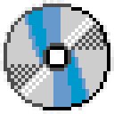

Это проект от Владимира «Сыра» Маасдама. Тут начинается проект с несколькими игровыми проектами. Присоединяйтесь к нашему серверу Discord и следите за новостями!
Мы не используем cookies. (Вроде бы...)
Режим выживания с пользовательскими плагинами.
Для связи и сотрудничества:
Управление: W/S, ↑/↓, кнопки ниже или палец по полю. До 7 очков.
Клавиатура работает внутри экрана DOS (Esc — тоже). Свою игру можно открыть кнопкой «Открыть файл…» (.jsdos). Закрыть окно — кнопка ×.
На телефоне нет клавиатуры для ввода текста — есть только кнопки выше. Касание экрана двигает мышь, быстрый тап — клик.